LR Maker Lab · G-Code 3D
Módulo 1 · Comece aqui
Guia do
Painel G-Code 3D
O material de consulta da aula. Aba por aba, o que preencher, o que o Painel calcula sozinho e o que fazer quando bater a dúvida.
A promessa do G-Code 3DEm 72 horas, você sai da impressora parada para três propostas entregues na mão de um comerciante.
Como usar este guia
Assista à aula uma vez. Volte aqui quando travar.
A aula mostra o caminho inteiro. Este guia serve para consultar depois: procure a aba em que você está, ou vá direto para as Dúvidas frequentes.
| Antes de abrir a planilha | 2 |
| O caminho em 5 passos · aba Comece aqui | 3 |
| Seletor · descubra o seu G-Code | 4 |
| Painel · onde você está e o que fazer hoje | 5 |
| Missão 72h · os três dias, ação por ação | 7 |
| Alvos · da lista até a proposta na mão | 8 |
| Calculadora · a conta antes do preço | 10 |
| Resultados e Expansão · depois da venda | 11 |
| Decisão da semana 2 · escalar, ajustar ou trocar | 12 |
| Biblioteca · os 10 G-Codes | 13 |
| A rotina de 5 minutos e os erros mais comuns | 14 |
| Dúvidas frequentes | 15 |
| Cola do Painel · uma página para imprimir | 17 |
Antes de abrir a planilha
Salve uma cópia sua. Guarde o arquivo original intacto e trabalhe numa cópia com o seu nome. Se algo quebrar, você começa de novo em um minuto.
Abra no Excel ou no LibreOffice Calc. Os dois abrem tudo: fórmulas, cores, listas e links entre abas. No Google Planilhas as fórmulas funcionam, mas os links entre abas podem não abrir; nesse caso, use as abas no rodapé.
Preencha só as células verde-claras. As brancas são fórmula. Se você digitar em cima delas, o Painel para de calcular aquele ponto.
Use as listas. Onde aparece uma setinha na célula, escolha na lista em vez de digitar. "Sim" digitado com espaço no fim não conta.
As quatro cores: você preenche calculado, não mexa pronto ou para hoje atrasado ou abaixo do piso
Links. Todo "Abrir X →" e "Ir para o Painel →" leva para outra aba. No Excel, clique uma vez. No LibreOffice, segure Ctrl e clique.
Aba Comece aqui
O caminho em 5 passos
É a primeira aba da planilha. Cada passo tem um link que abre a aba certa. Siga na ordem.
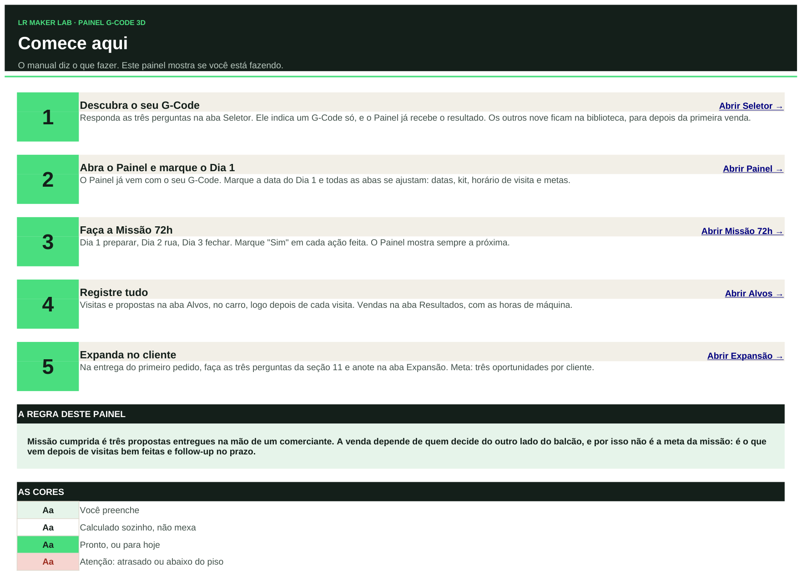
A aba Comece aqui, com os 5 passos, a regra do Painel e a legenda das cores.
| Passo | O que você faz |
|---|
| 1 · Seletor | Responde três perguntas e recebe um G-Code. |
| 2 · Painel | Marca a data do Dia 1. Todas as abas se ajustam. |
| 3 · Missão 72h | Marca "Sim" em cada ação feita. |
| 4 · Alvos e Resultados | Anota visitas no carro e vendas com as horas de máquina. |
| 5 · Expansão | Na entrega, faz as três perguntas da seção 11 e anota. |
A regra do Painel. Missão cumprida é três propostas entregues na mão de um comerciante. A venda depende de quem decide do outro lado do balcão; por isso ela não é a meta da missão. Ela é o que vem depois de visitas bem feitas e follow-up no prazo.
Aba Seletor
Três perguntas. Um G-Code.
Responda com a sua realidade de hoje, não com a que você quer ter. O resultado vai sozinho para o Painel.
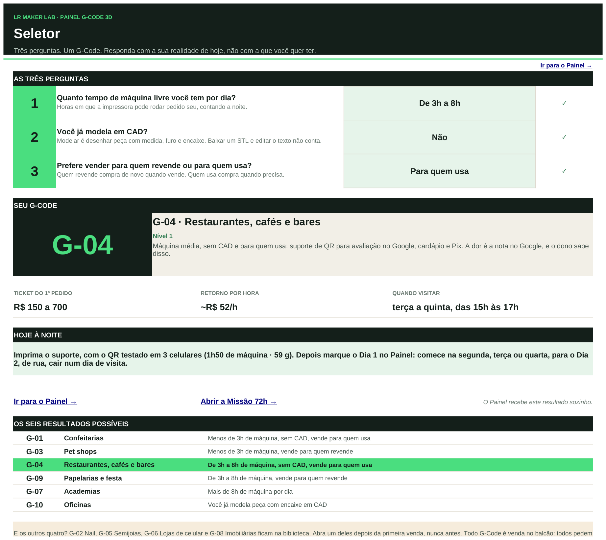
Exemplo: 3h a 8h de máquina, sem CAD, vendendo para quem usa → G-04 Restaurantes.
As perguntas
| 1 · Máquina livre | Horas por dia em que a impressora pode rodar pedido seu, contando a noite. Menos de 3h, de 3h a 8h ou mais de 8h. |
| 2 · CAD | Modelar é desenhar peça com medida, furo e encaixe. Baixar um STL e editar texto não conta: responda "Básico". |
| 3 · Para quem vender | Quem revende compra de novo quando vende. Quem usa compra quando precisa. |
Os seis resultados
| G-01 | menos de 3h · para quem usa |
| G-03 | menos de 3h · para quem revende |
| G-04 | 3h a 8h · para quem usa |
| G-09 | 3h a 8h · para quem revende |
| G-07 | mais de 8h |
| G-10 | já modela peça com encaixe |
O que olhar depois de responder
- Seu G-Code, com nível e o porquê da indicação.
- Ticket, retorno por hora e quando visitar.
- Hoje à noite: o kit de amostra para imprimir e o melhor dia para começar.
G-02, G-05, G-06 e G-08 ficam na Biblioteca. Abra um deles depois da primeira venda, nunca antes.
Aba Painel
Onde você está e o que fazer hoje
É a aba que você abre todo dia. Nela você preenche só uma coisa: a data do Dia 1. O resto vem das outras abas.
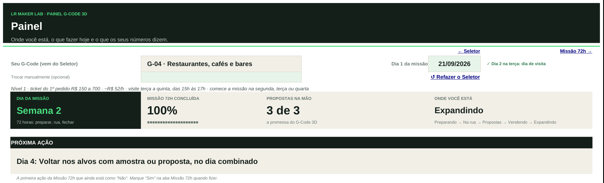
Topo do Painel: G-Code, data do Dia 1, os quatro cartões e a Próxima ação.
| Campo | Como funciona |
|---|
| Seu G-Code | Vem do Seletor. Para refazer as perguntas, clique em "↺ Refazer o Seletor". |
| Trocar manualmente | Opcional. Escolha outro G-Code aqui só quando a decisão da semana 2 pedir TROCAR, ou depois da primeira venda. Apague para voltar ao do Seletor. |
| Dia 1 da missão | A data em que você começa a preparar. As datas da Missão 72h saem daqui. |
| Aviso do Dia 2 | "✓" quando o Dia 2, o dia de rua, cai num dia de visita do seu G-Code. "⚠" quando não cai: o aviso diz em que dia começar. |
| Linha de resumo | Nível, ticket do 1º pedido, retorno por hora, quando visitar e os melhores dias para começar. |
Os quatro cartões
| Dia da missão | Dia 1, 2 ou 3 conforme a data de hoje. Depois do Dia 3, mostra "Semana 2". |
| Missão 72h concluída | Quantas ações da Missão 72h estão marcadas "Sim". |
| Propostas na mão | Quantas propostas você entregou, de 3. É a promessa do G-Code 3D. |
| Onde você está | Preparando → Na rua → Propostas → Vendendo → Expandindo. |
Próxima ação é a primeira ação da Missão 72h que ainda está como "Não". Fez? Marque "Sim" na Missão 72h e a próxima aparece.
Aba Painel · continuação
O que os seus números dizem
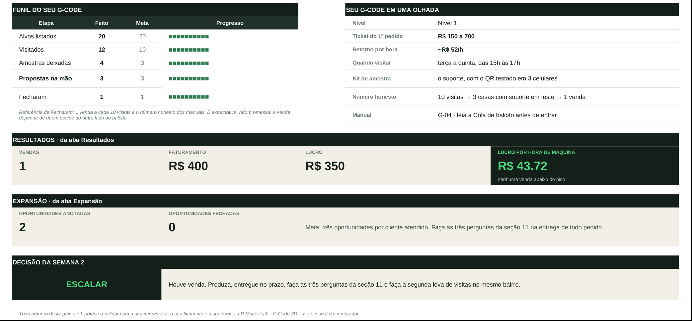
Parte de baixo do Painel: funil, resumo do G-Code, Resultados, Expansão e a decisão da semana 2.
| Bloco | De onde vem e como ler |
|---|
| Funil do seu G-Code | Conta as linhas da aba Alvos: listados (meta 20), visitados (meta 10), amostras (meta 3), propostas (meta 3) e fechados. "Fecharam: 1" é referência dos manuais, não meta: é expectativa, não promessa. |
| Seu G-Code em uma olhada | Resumo da Biblioteca: nível, ticket, retorno por hora, quando visitar, kit e o número honesto do manual. |
| Resultados | Vendas, faturamento, lucro e lucro por hora de máquina, da aba Resultados. Se alguma venda ficou abaixo do piso, o cartão avisa. |
| Expansão | Oportunidades anotadas e fechadas, da aba Expansão. |
| Decisão da semana 2 | ESCALAR, AJUSTAR ou TROCAR, lida dos seus números. Veja a página 12. |
O funil conta só o seu G-Code. Linhas com G-Code em branco na aba Alvos contam para o G-Code do Painel. Linhas com outro G-Code, ou com "Exemplo · apague", ficam de fora.
Aba Missão 72h
Os três dias, ação por ação
Dia 1 preparar, Dia 2 rua, Dia 3 fechar. Depois, a semana 2. Você só mexe na coluna "Feito?".
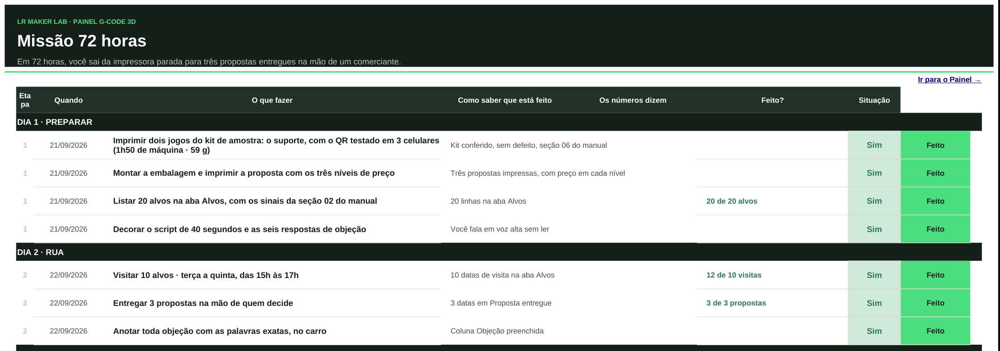
Dias 1 a 3: a data sai do Dia 1 do Painel. As ações usam o kit e o horário do seu G-Code.
| Coluna | O que é |
|---|
| Quando | A data de cada ação, calculada pelo Dia 1. |
| O que fazer | A ação, já com o kit e o horário de visita do seu G-Code. |
| Como saber que está feito | O sinal concreto de que a ação acabou. Sem o sinal, não está feita. |
| Os números dizem | O que as abas Alvos, Resultados e Expansão já mostram, como "12 de 10 visitas". |
| Feito? | Você marca "Sim" ou "Não". |
| Situação | Feito Hoje Atrasado ou "A fazer", pela data. |
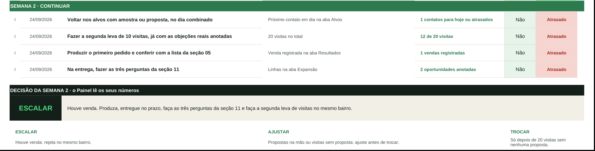
Semana 2: voltar nos alvos, segunda leva, primeiro pedido e as perguntas da entrega.
Aba Alvos
Da lista até a proposta na mão
Cada linha é um comércio. Preencha no carro, logo depois de cada visita: o que você anota na hora vale mais do que o que lembra à noite.
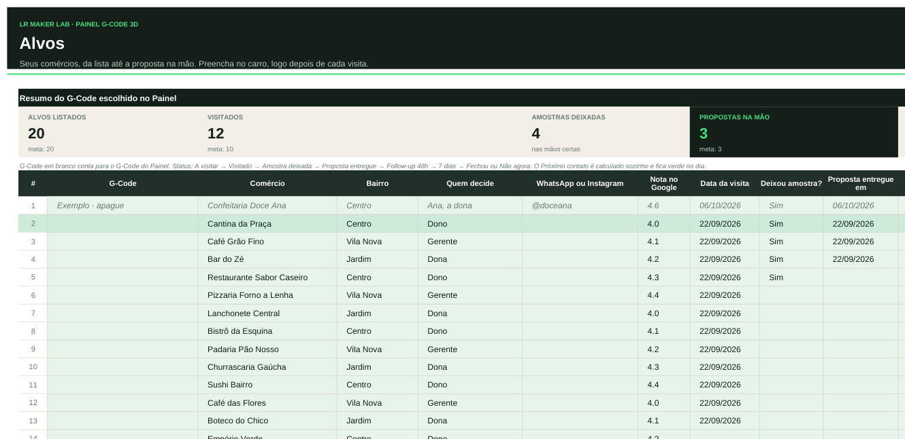
Os cartões do topo e as primeiras colunas: quem é o comércio e quem decide.
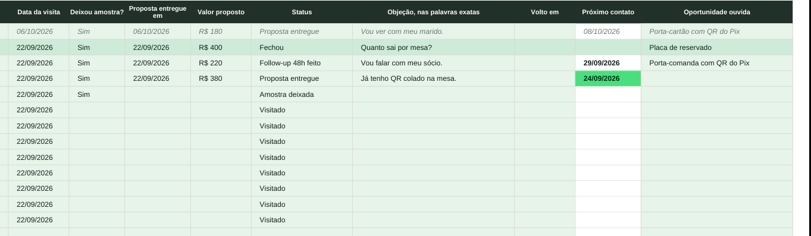
As colunas da visita: amostra, proposta, status, objeção e o próximo contato calculado.
A linha "Exemplo · apague" mostra como preencher. Ela não conta em nenhum número. Apague quando quiser.
Aba Alvos · continuação
Coluna por coluna
| Coluna | O que anotar |
|---|
| G-Code | Deixe em branco: conta para o G-Code do Painel. |
| Comércio, Bairro | Nome e bairro. Visite um bairro por vez. |
| Quem decide | Dono, gerente, sócia. Proposta entregue a quem não decide não conta. |
| WhatsApp ou Instagram | Para o follow-up. |
| Nota no Google | Um dos sinais da seção 02 do manual. |
| Data da visita | Com data, conta como visitado. |
| Deixou amostra? | "Sim" conta como amostra deixada. |
| Proposta entregue em | Com data, conta como proposta na mão. É daqui que o follow-up é contado. |
| Valor proposto | O nível de preço que a pessoa olhou por mais tempo. |
| Status | Escolha na lista (veja abaixo). |
| Objeção | As palavras exatas. Elas mostram o que ajustar na segunda leva. |
| Volto em | A data combinada com a pessoa. Quando preenchida, vale mais do que a conta automática. |
| Próximo contato | Calculado sozinho. Fica verde no dia. |
| Oportunidade ouvida | Tudo o que a pessoa disse precisar além do seu kit. |
O status e o próximo contato
| Status | Próximo contato |
|---|
| A visitar · Visitado · Amostra deixada | Só se você preencher "Volto em". |
| Proposta entregue | 2 dias depois da proposta: follow-up de 48h. |
| Follow-up 48h feito | 7 dias depois da proposta. |
| Follow-up 7 dias feito | 21 dias depois da proposta: a mensagem final. |
| Fechou · Não agora | Sai da agenda. "Não agora" fica cinza. |
G-07, G-08 e G-10 têm prazos próprios na seção 10 do manual. Nesses, use a coluna "Volto em" com a data do seu manual.
Aba Calculadora
A conta antes do preço
Use sempre que alguém pedir um orçamento, antes de responder. Leva um minuto.
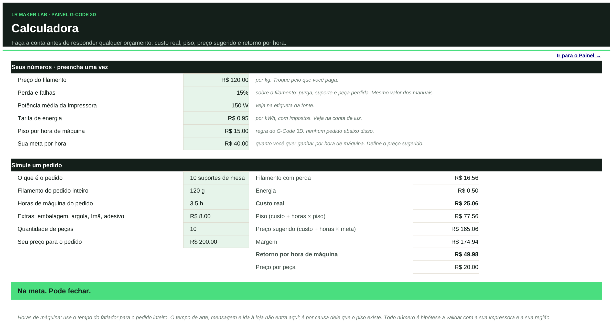
Seus números no topo, uma vez só. Embaixo, o pedido que você está orçando.
Seus números · preencha uma vez
| Preço do filamento | O que você paga por kg. |
| Perda e falhas | 15% sobre o filamento: purga, suporte e peça perdida. O mesmo valor dos manuais. |
| Potência e tarifa | Watts da etiqueta da fonte e o R$/kWh da conta de luz, com impostos. |
| Piso por hora | R$ 15 por hora de máquina. Regra do G-Code 3D: nenhum pedido abaixo disso. |
| Sua meta por hora | Quanto você quer ganhar por hora de máquina. Define o preço sugerido. |
O veredito
| Abaixo do piso | Não feche por esse preço. Suba o preço ou mude a peça. |
| Acima do piso | Dá para fechar, mas veja se cabe subir o preço. |
| Na meta | Pode fechar. |
Horas de máquina é o tempo do fatiador para o pedido inteiro. Arte, mensagem e ida à loja não entram na conta: é por causa desse tempo que o piso existe.
Abas Resultados e Expansão
Depois da venda
Resultados · uma linha por venda fechada
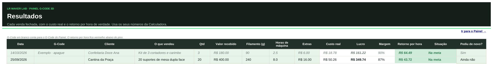
Você preenche data, cliente, o que vendeu, quantidade, valor, filamento, horas e extras. O resto sai sozinho.
Custo real, lucro, margem, retorno por hora e situação são calculados com os seus números da Calculadora. O retorno por hora fica vermelho abaixo do piso. Em "Pediu de novo?", anote quando o cliente voltar a comprar.
Expansão · as três perguntas da entrega
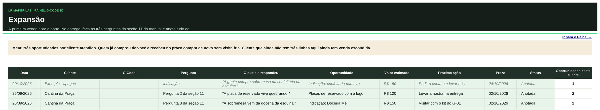
Cada resposta que abre uma venda vira uma linha. A última coluna conta as oportunidades de cada cliente.
Na entrega do primeiro pedido, faça as três perguntas da seção 11 do seu manual e anote a resposta com as palavras da pessoa. A meta é três oportunidades por cliente atendido; a contagem fica verde quando o cliente chega a três. Status: Anotada → Proposta feita → Fechou ou Não agora.
Quem já comprou de você e recebeu no prazo pode comprar de novo sem visita fria. Cliente sem três linhas aqui ainda tem pergunta para fazer.
Painel e Missão 72h
Decisão da semana 2
O Painel lê os seus números e diz o próximo movimento. Ele aparece no fim do Painel e no fim da Missão 72h. A regra é simples: não se troca de G-Code por ansiedade.
| A decisão | Quando aparece | O que fazer |
|---|
| SIGA A MISSÃO | Menos de 10 visitas. | Siga a próxima ação. A decisão só vale depois das primeiras 10 visitas. |
| ESCALAR | Pelo menos uma venda, na aba Alvos ou em Resultados. | Produza, entregue no prazo, faça as três perguntas da seção 11 e faça a segunda leva de visitas no mesmo bairro. |
AJUSTAR O
FOLLOW-UP | 3 propostas ou mais, nenhuma venda ainda. | Agora é follow-up: 48h, 7 dias e a mensagem final, como na seção 10. Não troque de G-Code antes disso. |
AJUSTAR A
ABORDAGEM | 10 visitas ou mais e menos de 3 propostas. | Releia as objeções anotadas, confira o horário de visita e faça a segunda leva de 10. |
| TROCAR | 20 visitas e nenhuma proposta. | Troque para o G-Code da coluna "Se precisar trocar" da Biblioteca. Leve as objeções anotadas: elas valem para o próximo. |
Como trocar, na prática
No Painel, escolha o novo G-Code em "Trocar manualmente".
Marque uma nova data de Dia 1 e volte as ações da Missão 72h para "Não".
Na aba Alvos, preencha a coluna G-Code das linhas antigas com o código anterior. Assim elas saem da conta do novo G-Code, e o histórico fica guardado.
A coluna "Se precisar trocar" é uma sugestão. Ela é editável: escolha outro G-Code se fizer mais sentido para a sua região.
Aba Biblioteca
Os 10 G-Codes
São os dados que alimentam o Painel, tirados dos manuais. Consulte para comparar; não precisa editar nada, fora a coluna "Se precisar trocar".
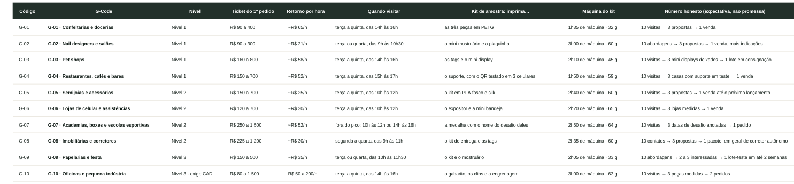
Código, nível, ticket, retorno por hora, quando visitar, kit, máquina do kit, número honesto e plano B.
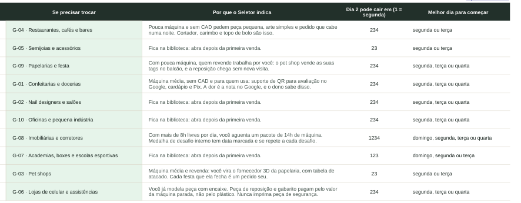
Por que o Seletor indica, dias em que o Dia 2 pode cair e melhor dia para começar.
| Coluna | Para que serve |
|---|
| Número honesto | A expectativa de cada manual, como "10 visitas → 3 propostas → 1 venda". É referência, não promessa: a venda depende de quem decide do outro lado do balcão. |
| Se precisar trocar | O plano B que o Painel sugere na decisão TROCAR. |
| Dia 2 pode cair em | Os dias da semana em que dá para visitar (1 = segunda). É o que o aviso do Dia 2 no Painel confere. |
| Melhor dia para começar | O Dia 1 que coloca o Dia 2 num dia de visita. |
Todo dia
A rotina de 5 minutos
Abra o Painel. Leia o dia da missão e a Próxima ação.
Na aba Alvos, veja quem está verde em Próximo contato. É o follow-up de hoje.
Faça a ação e marque "Sim" na Missão 72h.
Depois de cada visita, no carro: data, amostra, proposta, status e a objeção com as palavras exatas.
Recebeu pedido de orçamento? Calculadora antes de responder. Fechou? Uma linha em Resultados.
Os erros mais comuns
| O erro | O que acontece e como resolver |
|---|
| Digitar em célula branca | A fórmula some e aquele número para. Desfaça com Ctrl+Z, ou copie a célula da planilha original. |
| Esquecer a data do Dia 1 | As datas da Missão 72h ficam vazias e o Painel não sabe em que dia você está. |
| Começar num dia que joga o Dia 2 para fora da janela de visita | O aviso "⚠" aparece ao lado da data. Mude o Dia 1 para o dia que o aviso sugere. |
| Preencher a coluna G-Code em Alvos à toa | Se o código não for o do Painel, a linha sai da conta. Deixe em branco. |
| Anotar a visita à noite | A objeção vira resumo e perde a palavra exata. Anote no carro. |
| Horas de máquina sem contar o pedido inteiro | O retorno por hora sai maior do que é. Use o tempo do fatiador para todas as peças. |
| Trocar de G-Code antes das 20 visitas | Você perde a primeira leva inteira. Siga a decisão da semana 2. |
| Abrir G-02, G-05, G-06 ou G-08 antes da primeira venda | Eles ficam na Biblioteca de propósito. Um G-Code até a primeira venda. |
Consulta rápida
Dúvidas frequentes
O Seletor não mostra nenhum G-Code.
Faltou responder. Com "Menos de 3h" ou "De 3h a 8h", as três perguntas são necessárias. "Mais de 8h" já indica G-07, e "Sim, peça com encaixe" no CAD já indica G-10. Quando uma resposta não foi usada, o Seletor avisa embaixo do resultado.
Não gostei do G-Code que saiu. Posso escolher outro?
Pode, em "Trocar manualmente" no Painel. Antes, refaça o Seletor com a sua realidade de hoje, não com a que você quer ter. Na maioria das vezes o G-Code indicado é o que cabe na máquina e no tempo que você tem agora.
Em que dia começo a missão?
No dia em que o Dia 2, o dia de rua, cai numa janela de visita do seu G-Code. A linha de resumo do Painel e a caixa "Hoje à noite" do Seletor dizem os melhores dias. Se o aviso ao lado da data mostrar "⚠", mude o Dia 1.
Perdi um dia. A missão acabou?
Não. As ações ficam "Atrasado" em vermelho, e a Próxima ação continua mostrando o que falta. Faça, marque "Sim" e siga. Se preferir recomeçar com datas certas, marque um novo Dia 1.
Marquei "Sim" e a Próxima ação não mudou.
Confira se você escolheu "Sim" na lista, sem espaço no fim, e se não há uma ação anterior ainda como "Não". A Próxima ação é sempre a primeira da lista que falta.
O funil mostra zero, mas eu preenchi a aba Alvos.
Três causas comuns: a coluna G-Code tem um código diferente do Painel (deixe em branco); a linha ainda é "Exemplo · apague"; ou a coluna Comércio está vazia. Visitado conta pela data da visita; proposta conta pela data em "Proposta entregue em".
O Próximo contato não aparece.
Ele só é calculado com a data da proposta e o status de follow-up, ou quando você preenche "Volto em". Status "Fechou" e "Não agora" saem da agenda.
O prazo de follow-up do meu manual é diferente do Painel.
Vale o manual. G-07, G-08 e G-10 têm prazos próprios na seção 10. Preencha a data certa em "Volto em", e ela passa na frente da conta automática.
Consulta rápida
Dúvidas frequentes
Entreguei três propostas. E agora?
A missão está cumprida. Agora é follow-up no prazo e a segunda leva de visitas. O Painel mostra "AJUSTAR O FOLLOW-UP" enquanto não houver venda: siga a seção 10 do manual antes de pensar em trocar.
O cliente fechou. Onde anoto?
Em dois lugares: na aba Alvos, mude o status para "Fechou"; na aba Resultados, crie uma linha com valor, filamento, horas e extras. O Painel passa para "Vendendo" e a decisão vira ESCALAR.
A Calculadora deu "abaixo do piso". O que faço?
Não feche por esse preço. Suba o preço, mude a peça para uma que gaste menos hora de máquina, ou ofereça o nível de preço de cima da proposta. O piso de R$ 15 por hora existe para pagar o tempo que não aparece no fatiador.
Os números da Calculadora são os meus?
Só depois que você trocar. Os valores iniciais (R$ 120/kg, 150 W, R$ 0,95/kWh) são exemplo. Coloque o que você paga; Resultados e Painel passam a usar os seus números.
Posso usar no Google Planilhas ou no celular?
As fórmulas funcionam no Google Planilhas, mas os links entre abas podem não abrir: use as abas no rodapé. No celular, dá para consultar e marcar "Sim", mas para preencher a aba Alvos o computador é mais confortável. O arquivo foi feito para Excel e LibreOffice.
Estraguei uma fórmula.
Ctrl+Z desfaz. Se já salvou, abra o arquivo original, copie a célula ou a linha inteira e cole no mesmo lugar da sua cópia.
Os 20 alvos acabaram e não fechei nada.
Olhe a decisão da semana 2. Com propostas na mão, é follow-up. Com visitas e sem proposta, é ajuste de abordagem: releia as objeções. Só com 20 visitas e nenhuma proposta o Painel indica TROCAR.
O Painel garante que eu vou vender?
Não. Ele garante que você sabe o que fazer hoje e o que os seus números dizem. A promessa do G-Code 3D é três propostas entregues na mão de um comerciante em 72 horas. A venda depende de quem decide do outro lado do balcão. Todo número do Painel é hipótese a validar com a sua impressora, o seu filamento e a sua região.
Imprima e deixe perto da impressora
Cola do Painel
Uma vez
- Salve uma cópia sua.
- Seletor: três perguntas.
- Calculadora: seus números.
- Painel: data do Dia 1, com "✓".
Dia 1 · preparar
- Dois jogos do kit de amostra.
- Embalagem e três propostas impressas.
- 20 alvos na aba Alvos.
- Script de 40 s e as seis respostas.
Dia 2 · rua
- 10 visitas no horário do seu G-Code.
- 3 propostas na mão de quem decide.
- Objeção com as palavras exatas, no carro.
Dia 3 · fechar
- Follow-up das três propostas.
- Alvos atualizada, com data de volta.
- Oportunidades ouvidas anotadas.
- Data da segunda leva na agenda.
Todo dia
- Painel → Próxima ação.
- Alvos → quem está verde hoje.
- Fez? "Sim" na Missão 72h.
Follow-up · conta da proposta
- 48h → status "Follow-up 48h feito".
- 7 dias → "Follow-up 7 dias feito".
- 21 dias → mensagem final.
- Prazo diferente no manual? Use "Volto em".
Orçamento
- Calculadora antes de responder.
- Abaixo de R$ 15/h de máquina: não feche.
Decisão da semana 2
- ESCALAR: houve venda.
- AJUSTAR O FOLLOW-UP: 3 propostas, sem venda.
- AJUSTAR A ABORDAGEM: 10 visitas, menos de 3 propostas.
- TROCAR: 20 visitas, zero proposta.
Cores
você preenche não mexa pronto / hoje atenção
Em 72 horas, você sai da impressora parada para três propostas entregues na mão de um comerciante.